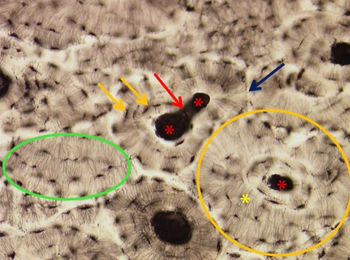

Volwassen compact bot is gemodelleerd tot een heel specifieke opbouw. Het bestaat uit cilindervormige eenheden, de systemen van Havers of osteonen, die evenwijdig met het oppervlak gelegen zijn. Centraal in elk osteon bevindt zich een kanaal van Havers, waarin bloedvaten, lymfevaten en zenuwen lopen. De botlamellen met daarin en ertussen de osteocyten in hun lacunes zijn als concentrische ringen rond het kanaal van Havers gerangschikt. Vele canaliculi vertrekken vanuit de lacunes en verlopen loodrecht georiënteerd op de lamellen. De kanalen van Havers zijn onderling verbonden door kleinere, dwarse kanalen, de kanalen van Volkmann. De grens tussen 2 osteonen, te zien als een lichter gekleurde zone, wordt cementlijn of kitlijn genoemd. Tussen de osteonen komen ook lamellen voor die niet tot het ene of andere osteon behoren; het betreft hier de interstitiële lamellen die restanten zijn van een eerder afgebroken systeem van Havers.
Op een gewone lichtmicroscopische coupe is deze opbouw nagenoeg nooit zichtbaar. De foto hieronder is van een zeer dun slijppreparaatje van een stukje compact bot. Hierop kan je de opbouw wel bestuderen:
Op een gewone lichtmicroscopische coupe is deze opbouw nagenoeg nooit zichtbaar. De foto hieronder is van een zeer dun slijppreparaatje van een stukje compact bot. Hierop kan je de opbouw wel bestuderen:

Slijppreparaat van een stukje compact lamellair bot. Hierop is de opbouw duidelijker zichtbaar dan op een gewoon lichtmicroscopisch preparaat. Midden in een osteon of systeem van Havers (oranje omcirkeld) vind je een kanaal van Havers (rode asterisken), waarrond concentrisch de botlammellen verlopen (gele asterisk). Zie je de fijne lijntjes hierin? Dit zijn de canaliculi. Op sommige plaatsen zie je dat de kanalen van Havers met elkaar verbonden zijn via een kanaal van Volkmann (rode pijl). Osteonen raken elkaar ter hoogte van de kitlijn of cementlijn (blauwe pijl). Osteocyten (oranje pijlen; zwarte ‘vlekjes’) vind je terug in de lacunes. Enkele interstitiële lamellen zijn groen omcirkeld.
Vordering zelfstudie botweefsel: